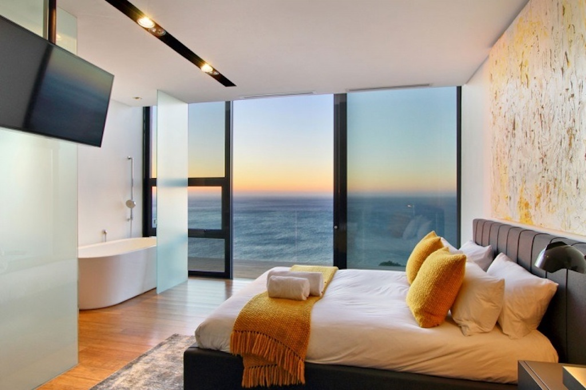
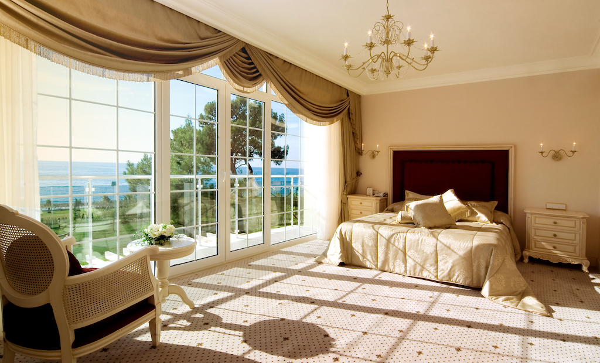
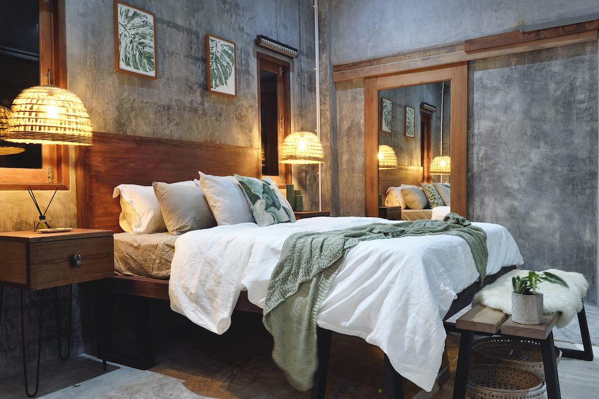
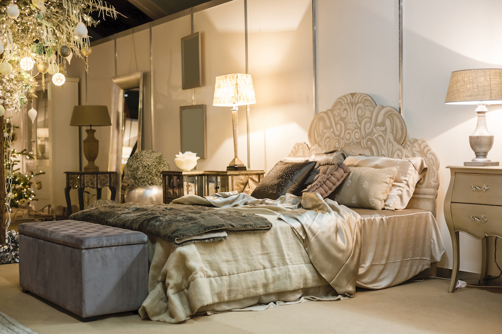

The Rooms
Lemon Room
 Our Lemon room is on the first floor of Naples Mansion. It features large windows overlooking the beautiful blue ocean, wooden floors and modern beds. With a maximum occupancy of 3 people, Lemon room is an ideal choice for families with 1 child, 3 friends or a couple. It is equipped with all the amenities of a room of a modern accommodation. However, it does not lose the sense of a classy luxury mansion. On the contrary, it connects it successfully with today’s modern times.
The room enchants the visitors with a sense of nobility and a harmony! Very comfortable and functional room of 30sqm in which white and black draw the environment, made alluring by subtle color details. Simplicity and great taste are key design elements in the bathroom, equipped with all comforts and refined Wengè details. The furnishings and tapestries are unique, exclusive and tailor-made by master craftsmen. The atmosphere is elegant but informal and warm, to make your stay an unforgettable experience of comfort, relaxation and tranquillity. The Lemon room is a perfect paradise hideaway to enjoy absolute peace and privacy.
Trussrod
 Trussrod room has a royal soul, 22sqm, lovely balcony for outside breakfast with the view of the ocean. For music addicts, but not only. The brown and white contrast in the bathroom gives a touch of elegance and functionality. The handcrafted furniture, the prints, the furnishings, everything comes together to create an environment of strong and unique character. When you enter into this room you travel to a purer and more beautiful world! In a romantic world!
With a maximum occupancy of 4 people, Trussrod room is an ideal choice for families with 2 children or 2 couples. It is equipped with 1 double and 1 semi-double bed. It’ s on the first floor of the main Naples Mansion building. On its balcony, the comfortable outdoor furniture will help you relax. The view to the ocean, the cistern and the mango is unique!
Sophia
 The biggest of our room, 31sqm. The warm light coming from the balcony and the soft colors make this room very seductive. The bathroom is wide and cosy. Enjoy the mix of the contemporary essential style with a taste of retrò details. Space is designed by elegant elements that are combined to create a very relaxing and refined atmosphere.
With a maximum occupancy of 2 people, Sophia room is an ideal choice for a couple. It is equipped with all the amenities of a room of a modern accommodation. However, it does not lose the sense of a classy luxury mansion. On the contrary, it connects it very successfully with today’s modern times.
Use the balcony and let your senses free! Enjoy the stunning view of the garden and the unparalleled smells of the citrus of the estate. We are sure that the fragrances of our citrus trees will impress you and you will want to visit Naples again and again! Relax and let bird songs make unique musical summer memories. How long do you need to fall in love with it?
Mediterranean
 Our Mediterranean Room is the most romantic setting for your beautiful moments.The soft-colored walls and antique wood furniture, the elegance decor: all, in the 18sqm of the Mediterranean room, is played on the armonic contrast that represents the soul of the city. The bathroom (8sqm), with its large mirror and ceramic bathroom fittings, is very comfortable and provides all the freedom and convenience of your own home. The pieces of furniture and the tapestry are studied to enhance the strong and well-defined soul of the room.
The large balcony is there to use it in the morning, to enjoy your coffee, and in the evening hours for a refreshing drink. With an occupancy of maximum 2 people, Medeterranean Room is an ideal choice for a couple! There is, of course, the possibility to convert it into an apartment of 4-5 people, joining the adjacent Room, depending on the availability!